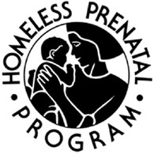

Homeless Prenatal Program

Website:
http://homelessprenatal.org Location:
San Francisco, CA
Seizing the motivating opportunity created by pregnancy and parenthood, HPP joins with families to help them recognize their strengths and trust in their capacity to transform their lives to break the cycle of homelessness and poverty.
Project Description:
With the strain of funding for human resources this year and state of the economy, HPP is serving more and more clients but unfortunately cannot increase the number of staff to maintain the same quality of care. HPP is looking to grow its volunteer programs and futher engage long-time, regular volunteers in order to continue providing vital services for its clients. This key objective of the most recent strategic plan developed by the Executive Director and Board sets the goal at increasing volunteer participation by 50%.
Rather than cut client services that have no staff to run the program, HPP seeks an Americorps VISTA to grow our new Community Technology Center (CTC) volunteer program and revitalize the CTC programs.
The CTC is both under-utilized by clients and somewhat neglected by the IT team, who have very little time allocated to CTC support or organizing volunteers to help. Clients who have little computer knowledge are helpless during unattended hours, and will unlikely return after a frustrating visit. During well-supported CTC hours, client attendance skyrockets. When the CTC is not well-supported, client attendance plummets.
While the IT staff has had some success in utilizing volunteers, the program lacks organization and infrastructure to be successful and sustainable. CTC volunteers are much more specialized than regular volunteers, requiring more training and committment, and while the program remains unorganized, cannot be managed by the general HPP Volunteer Coordinator.
The VISTA will organize, oversee, and train a team of volunteers who will assist clients during open lab hours, provide one-on-one support with resume and cover letter writing, and teach workshops ranging from basic computer skills to exciting digital media tools.
By creating a thriving, collaborative community of CTC volunteers, the training aspect of the program will be virtually self-sustaining by utilizing both senior volunteers and free general training from CTN Bay Area. Volunteer coordination could also be supported by a leading volunteer in conjunction with the general HPP Volunteer Coordinator.
A well-organized CTC Volunteer Program will be transitioned to the general HPP Volunteer Coordinator after the departure of the VISTA, who will be better prepared to maintain the program. If additional resources are still required, proposing additional hires will be more viable with an organized, successful program.
Project Tangibles:
HPP encourages the sharing of curriculum materials and CTC organization information with programs such as CTN Bay Area and other CTC's.
Supported Projects
Outreach & Volunteer Coordinator
Scott Reed
7/2009 — 7/2010
The ultimate goal of this VISTA project is to shine the spotlight on HPP’s mission and work, raising visibility for a wide audience: current and prospective donors, volunteers, and a diverse community of San Francisco families who need our services.
With direction from the project manager and Development Director, the VISTA will develop creative methods for collecting the many stories of need, perseverance and success that buzz around our client programs and are the pride of our client services staff. The VISTA will gather these stories, in addition to news and events about the agency, and distribute the information to the community through a variety of channels.
Goal 1: Drive traffic to Web site and convert visitors into members, volunteers and advocates
Goal 2: Create sustainable process for content gathering and distribution at HPP
Scott worked with mentor Brittney Fosbrook to create an ongoing, nearly self-sustainable strategic plans for a volunteer-run program in our Community Technology Center. Scott created an online volunteer guide which contains all the “how to’s” and useful links for our volunteers.The guide also contains volunteers agreements and lab rules. Scott also worked with our Systems Administrator to create customized, bilingual computer profiles for our clients, making it easier for our guests to login and use the lab with minimal computer experience. Scott also cleaned up the space physically, getting rid of unused materials and installing useful information sheets for additional resources. In addition to volunteer outreach, Scott also conducted major outreach to clients and to our case management staff, so that they understand the resources available and their potential value to clients.
The volunteer program in the CTC has been successful in that it has increased lab attendance, increased volunteer engagement, and has decreased the amount of staff time necessary to run the lab. However, the CTC is not able to self-sustain on volunteers alone. Scott has been hired as a full-time employee, with half-time duties related to CTC coordination.
Scott was a key player in HPP’s first steps in social media, creating a Facebook and Twitter presence, as well as advising the development of our revamped website. This developed as the need was identified at HPP and matched Scott’s skills and interests.
Staff Technology Training and CTC Support
Britney Fosbrook
9/2006 — 9/2007
-Teaching weekly Community Health Worker class - including developing original curriculum.
-Staff training - HPP’s staff has a low computer literacy and needs training. Brittney is surveying this need and will advise on the creation of a personalized assessment for staff. Then she will help with the development of the staff training curriculum.
-Working to control technology issues through organization and standardization. Activities include creating computer inventory, set-uping standard desktop configurations, writing policy and working on long-term goals for Technology Center and HPP.
Brittney teaches the Community Health Worker (CHW) Class. (The CHWs are paid interns, often former clients, who are usually hired as staff at HPP after they finish their internship.) She has created a dynamic and engaging curriculum for the CHW class.
Brittney also gives private weekly staff tutoring as well as ongoing staff tech support.
During open lab drop-in hours every afternoon, Brittney offers housing and job search support for clients.
Brittney is also in charge of maintaining our websites, and our organization wide forms system. She was put in charge of the phones, created a phone user guide and manages new staff phone needs.
Brittney is active in writing policy and long-term planning, including helping in the hiring process of the new Technology Manger.
Another large project that Brittney has taken on gracefully is overseeing the ailing database, which has not been able to handle our staffs’ needs. She is working as the intermediary between staff, consultants and database programmers and is working to prepare HPP for a new database system.
Brittney has been instrumental at every step, on nearly every project. She has been able to assess where her time and talent could be better used during her stay at HPP.
CTC Program Building, Outreach, and Support
Ellen-Rae Cachola
9/2005 — 9/2006
The Americorps VISTA volunteer would expand our program by developing and piloting a technology class for our English speaking clients, the majority of whom are African-American. The goal is to motivate women from the HPP’s English speaking support groups to avail themselves of the resources in the computer lab. To reinforce and extend the class experience, the Americorps*VISTA will create a weblog specifically for these clients where they can share their interests, issues, questions and accomplishments. The weblog community will serve as an additional support group to these parents as they seek ways out of poverty. Through participation in classes, one-on-one instruction, and the weblog, these clients will upgrade their job and communication skills.
Our 2004-2005 VISTA developed a community web-site for homeless families and families in jeopardy of becoming homeless. This website is fast becoming a vital resource to such families and to case managers throughout the region for instant access to resource information. This years Americorps VISTA would expand the use of the website by (1) developing a workshop to introduce the website to new users, both clients and case managers, (2) develop promotional materials such as email announcements and posters, and (3) work with other volunteers to develop a separate homepage, navigation system and additional features just for case managers.
The Americorps*VISTA volunteer would expand our program by developing and coordinating a staff development program in the CTC. Since one of the best practices for strengthening a program such as ours is to invest in our case workers, we are planning to use the CTC for more staff development than in previous years. We will develop an on-line assessment tool to establish a baseline of the technology skills of all staff members. Using this data we will develop and coordinate skill set workshops tailored to staff needs that will be held in the CTC.
To strengthen and expand our job readiness program the Americorps*VISTA will be responsible for developing 5 In order to do this the VISTA will identify, contact and visit appropriate educational and vocational training programs. In addition the VISTA will develop referral protocols between these programs and HPP Case Managers.
The Americorps*VISTA volunteer will also coordinate our “Computers in the Home” Project. This project takes our capacity to give technological skills and experience to the underserved population beyond the walls of our CTC. Funded to provide 40 families with refurbished computers and in-home tech support through ReliaTech, a social venture project of StreetTech of Richmond, CA., participants receive training and, upon completion of the training, computers and periodic in-home tech support. In addition, clients who have received computers for their homes continue to receive training at the HPP’s CTC.
Finally, the Americorps*VISTA will collaborate with our partners in the Community Connectivity Collaboration (One Economy, StreetTech, ReliaTech, Canal Alliance, TechFutures), a group formed to define needs of local CTC’s and find ways to seek funding. The VISTA will attend CCC meetings and other partnering events that may develop.
I know that I speak for the entire staff of the Homeless Prenatal Program (HPP) when I say that Ellen-Rae Cachola has been a boon to our organization. As her supervisor in the Community Technology Center it has been my pleasure to work very closely with her for the last 12 months. She is highly committed, intelligent, and industrious. She is extremely productive and always looking for new projects. She is also very personable, able to interact warmly with the diverse groups of people who work in our program and who come here for services. We are very lucky that she has stayed on at HPP as a part-time employee while she attends graduate school in San Francisco.
Ellen’s duties at HPP have included maintaining two websites, teaching technology in English and in Spanish, maintaining and developing the client database on Microsft Access, as well as trouble shooting technology problems in the lab and at staff workstations. She has worked with the local cable television access station to create PSAs and informational programming. In addition she has created an online generator for our paper forms which allows staff to print forms on an as needed basis from their own computers. She has also designed and published agency literature and signage in english and in spanish.
CTC Outreach and Support
Yvette Hunter
9/2004 — 5/2005
Goal 1: Develop a more consistent class structure and formal curriculum for the Technology Center.
Goal 2: Develop linkages with vocational and educational training programs in the San Francisco Bay Area.
Goal 3: Work on the development team to create a website of resources for the homeless population of San Francisco, especially families that are homeless.
From the beginning of her placement Yvette has improved the efficiency and the quality of services delivered to clients of the HPP Technology Center. Yvette has a quiet strength that clients and staff respect and admire. This trait has enabled Yvette to work well with all of the clients of the Technology Center (homeless and formerly homeless families) and with the staff.
Yvette’s work has increased the sustainability of the HPP Technology Center. She has assisted in formalizing HPP’s technology training curriculum for staff and clients. Her work on connecting HPP with educational and vocation al programs in the Bay Area will be enable HPP staff to assist clients in becoming self sufficient. Her excellent work on the resource website for homeless families in San Francisco will enable families and service providers to connect with needed resources.
Yvette managed a team of students from the University of San Francisco to create a resource website for homeless families called www.helping-sf.org. Yvette met with homeless families, service providers and staff at the Homeless Prenatal Program to ensure the relevance of the site content. She continues to update the site to guarantee that the material is up to date. She has already received praise from staff at San Francisco’s Department of Human Services and from homeless family service providers. I was recently at a conference were an Executive Director of CTC referenced helping-sf.org as a model to be replicated throughout the Bay Area.
Yvette is an excellent worker who is organized and highly focused. She accomplishes all tasks requested of her. She is an ideal staff member. Without this dedicated VISTA member the HPP Technology Center would not be able to live up to its potential. The technology center under Yvette has flourished and increased the access to technology for numerous homeless and low income families.